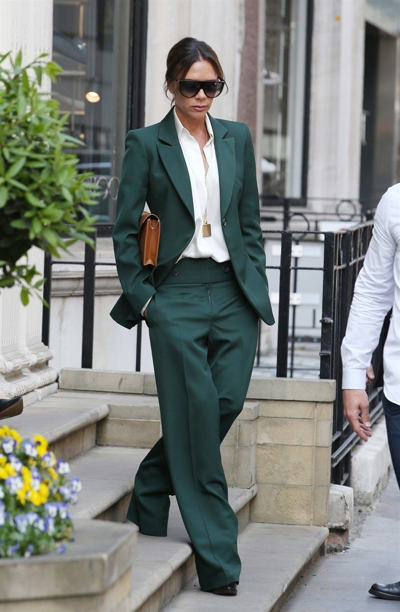

El estilo tradicional o clásico se diferencia de los demás por ser el más seguro de todos los estilos, es decir, con éste jamás serás fashion victim, puesto que es atemporal y se distingue por el uso de prendas de líneas limpias y nada recargadas.
Cuando pensamos en estilo romántico, imaginamos a una mujer soñadora con el pelo suelto y vestidos fluidos. Una mujer femenina, de espíritu libre que adora los volantes, y las flores bonitas.